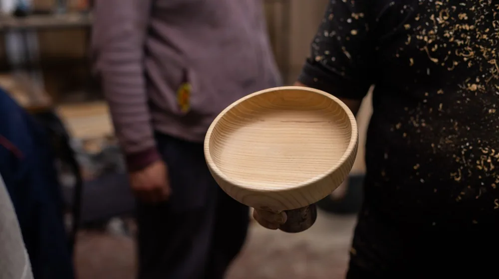

옻칠 식기 예약, 놓치면 후회할 완벽 가이드 (2026년 10월 최신)
사진: KoolShooters / Pexels (무료 이미지, 출처 표기)
옻칠 식기 예약, 놓치면 후회할 완벽 가이드 (2026년 10월 최신)

귀한 옻칠 식기, 마음먹고 구매하려니 어디서부터 시작해야 할지 막막하셨나요? 명품 수제 옻칠 식기는 수요가 많아 예약 없이는 원하는 제품을 구매하기 어려운 경우가 많습니다. 2026년 10월 기준으로, 후회 없는 옻칠 식기 예약을 위한 모든 정보를 이 글에서 확인하실 수 있습니다.
옻칠 식기, 왜 예약해야 할까요?
옻칠 식기는 자연에서 얻은 옻나무 수액을 여러 번 칠하고 건조하는 과정을 거쳐 만듭니다. 이 복잡한 공정은 숙련된 장인의 손길을 요구하며, 한 작품이 완성되기까지 짧게는 수개월에서 길게는 1년 이상이 소요되기도 합니다.
이러한 희소성과 장인 정신 덕분에 옻칠 식기는 단순한 그릇을 넘어 예술품으로 평가받습니다. 특히 이름난 공방이나 장인의 작품은 제작 수량이 한정되어 있어, 원하는 제품을 얻기 위해서는 사전 예약이 필수적입니다.
인기 옻칠 식기 공방/브랜드별 예약 특징 (2026년 10월 기준)
옻칠 식기를 제작하는 공방이나 브랜드마다 예약 방식과 제작 기간, 그리고 주요 제품군에 차이가 있습니다. 2026년 10월 현재, 국내 주요 공방들의 일반적인 특징을 아래 표로 정리했습니다.
이 정보는 일반적인 경향이며, 각 공방의 상황에 따라 변동될 수 있습니다. 정확한 예약 정보는 반드시 해당 공방의 공식 웹사이트나 직접 문의를 통해 확인하시길 권장합니다.
성공적인 옻칠 식기 예약 3단계 절차
1단계: 원하는 공방 및 제품 선정
어떤 옻칠 식기를 원하는지 명확히 결정하는 것이 첫 단계입니다. 공방별 웹사이트나 SNS를 방문하여 작품 스타일, 가격대, 제품군(밥그릇, 국그릇, 쟁반 등)을 탐색합니다. 후회 없는 선택을 위해 최소 2~3곳의 공방을 비교해보는 것이 좋습니다.
2단계: 예약 방식 및 기간 확인
선택한 공방의 예약 방식을 파악합니다. 대부분의 공방은 온라인 예약, 전화 예약, 현장 상담 후 예약 등의 방식을 운영합니다. 인기 공방은 특정 요일이나 시간에만 예약을 받는 경우가 많으므로, 예약 오픈 시기를 미리 확인하고 알림을 설정해두는 것이 중요합니다.
제작 기간이 긴 옻칠 식기의 특성상, 예약 후 수령까지 수개월이 소요될 수 있습니다. 급하게 필요하다면 재고가 있는 기성품을 문의하거나, 제작 기간이 비교적 짧은 공방을 고려해야 합니다.
3단계: 예약 및 결제 진행
공방의 안내에 따라 예약을 진행하고, 예약금 또는 완납 여부를 확인합니다. 맞춤 제작의 경우 상세한 요구사항을 전달하고 충분한 상담을 거쳐야 만족스러운 결과를 얻을 수 있습니다. 예약 후에는 제작 진행 상황을 주기적으로 확인하는 것이 좋습니다.
옻칠 식기 예약 시 놓치지 말아야 할 주의사항
- 환불 및 교환 규정 확인: 수제작 특성상 환불이나 교환이 어렵거나 엄격한 경우가 많으므로, 예약 전 반드시 공방의 규정을 확인해야 합니다.
- A/S 정책 문의: 옻칠 식기는 오래 사용할수록 가치가 높아지지만, 파손 시 수리가 필요한 경우가 있습니다. 공방의 A/S(사후 서비스) 정책을 미리 알아두면 안심하고 사용할 수 있습니다.
- 가품 및 유사품 주의: 옻칠 식기 시장이 커지면서 저렴한 가격의 유사품이나 흉내만 낸 제품도 유통됩니다. 정품 여부와 옻칠 사용 비율을 꼼꼼히 확인하고 신뢰할 수 있는 공방을 선택해야 합니다.
- 관리 방법 숙지: 옻칠 식기는 일반 그릇과 달리 섬세한 관리가 필요합니다. 예약 시 공방에서 안내하는 관리 방법을 숙지하여 오랫동안 아름답게 사용하세요. (예: 식기세척기 사용 금지, 부드러운 수세미 사용 등)
옻칠 식기는 단순한 주방용품을 넘어, 생활 속 예술이자 장인의 혼이 담긴 작품입니다. 신중한 예약을 통해 만족스러운 옻칠 식기를 얻으셨기를 바랍니다. 여러분의 식탁에 품격을 더하고, 대를 이어 물려줄 수 있는 가치 있는 경험이 되기를 응원합니다.
🔗 이 글도 함께 보면 좋아요: 기초연금 2026년 수급 자격, 놓치면 후회할 핵심 기준과 신청 방법
관련 추천 상품
이 포스팅은 쿠팡 파트너스 활동의 일환으로, 이에 따른 일정액의 수수료를 제공받습니다.